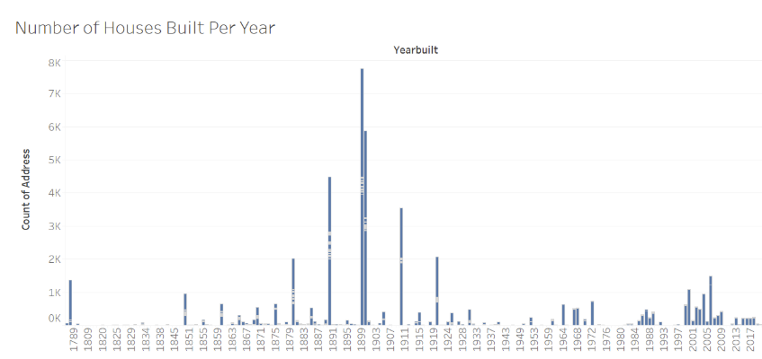
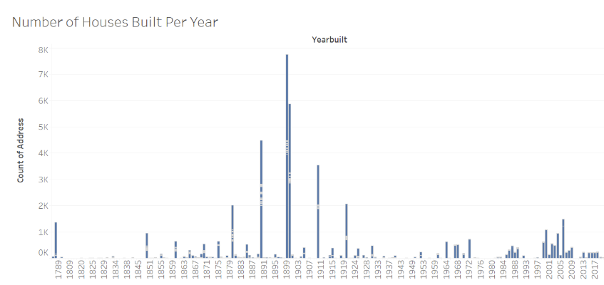

Subtheme: Corporate Landlords and Evictions
Overall Analysis Questions
- When did significant rises in housing construction occur, and what factors might explain these surges?
- Motivation: Housing construction patterns often reflect broader economic, social, and policy-driven shifts. Periods of rapid homebuilding may coincide with population growth, economic booms, infrastructure projects, or changes in housing policy.
- Evidence:The New York Times article noted that corporate investors often enter housing markets during periods of increased construction activity, particularly when new housing supply is expected to yield long-term returns. The Housing Justice Report highlighted how post-World War II housing booms and more recent construction waves have shifted ownership patterns—with corporate acquisitions becoming more prevalent in recent decades.
- Which neighborhoods have the highest corporate ownership rates?
- Motivation: Understanding which neighborhoods have high corporate ownership rates is essential for assessing potential risks of housing instability. Research indicates that corporate landlords are often more likely to displace tenants than individual landlords. By identifying these neighborhoods, we can better understand corporate influence on housing patterns.
- Evidence: The New York Times article (2023) found that corporate landlords across the U.S. have filed evictions at disproportionately high rates, especially in low-income neighborhoods. Corporate ownership often coincides with increased tenant turnover, as companies apply profit-driven property management practices. The Housing Justice Report highlighted that corporate acquisitions in Massachusetts were often followed by rent increases and tenant displacements, particularly in communities with historically stable ownership patterns.
- What types of properties have the highest number of flipped properties, and how might this relate to potential eviction patterns?
- Motivation: Frequent property flipping can indicate higher tenant turnover and potential eviction risks, especially when corporate landlords seek to renovate and reprice units. This analysis can reveal whether specific property types are disproportionately targeted in neighborhoods with high corporate ownership rates.
- Evidence: New York Times Article (2023) mentioned that corporate landlords often target apartment-style properties like condominiums and multi-family buildings due to their high turnover potential. Eviction filings are sometimes used as a strategic tool to clear units for renovations and rent increases. Condominiums and multi-family buildings are highlighted as prime targets for corporate investment. Housing Justice Report (MIT & Homes for All MA) found that eviction filings spiked in neighborhoods where corporate acquisitions increased—particularly in multi-family housing units. Post-COVID investor activity disproportionately targeted rental properties in low-income, minority-majority neighborhoods, often followed by turnover surges.
Discoveries & Insights
 



Summary
This analysis of the dataset revealed significant insights into housing development, corporate ownership, and property flipping patterns in Massachusetts. Key findings include the concentration of new housing development in the Greater Boston Area, particularly during periods of economic growth such as the post-World War II boom. The analysis also uncovered a positive correlation between corporate ownership rates and property flipping activity, with condominiums being the most commonly flipped property type. Inconsistencies in property classifications, such as the distinction between "Condo Bldg" and "Condominium," highlighted the need for better data cleaning. The findings emphasize the importance of understanding property dynamics in relation to corporate ownership and flipping activity. However, the accuracy and depth of this analysis could have been improved with more thorough preprocessing and data transformation.